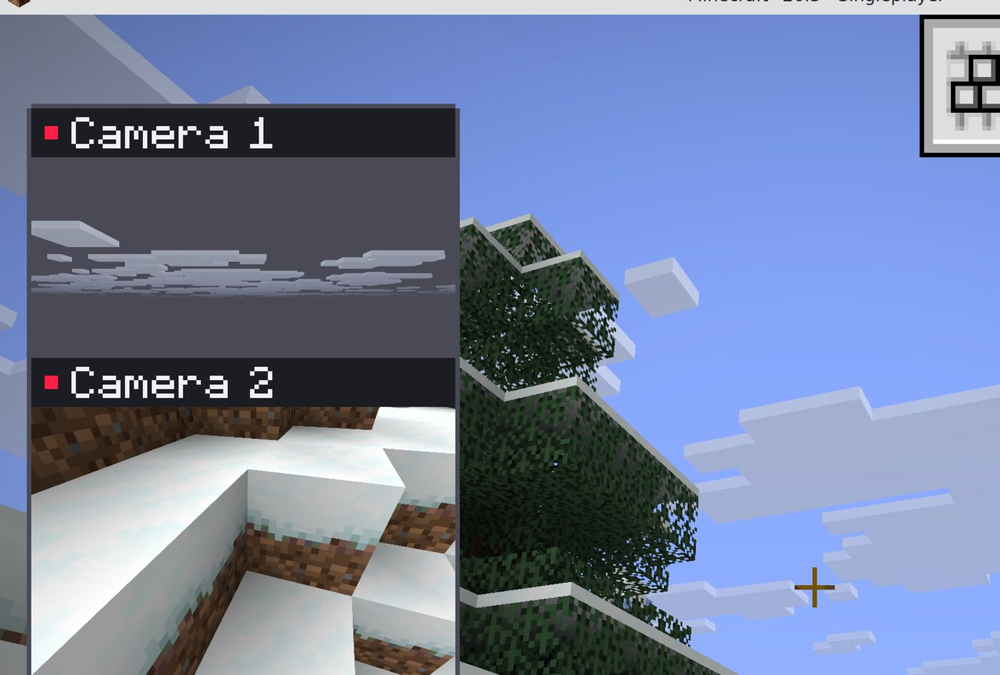
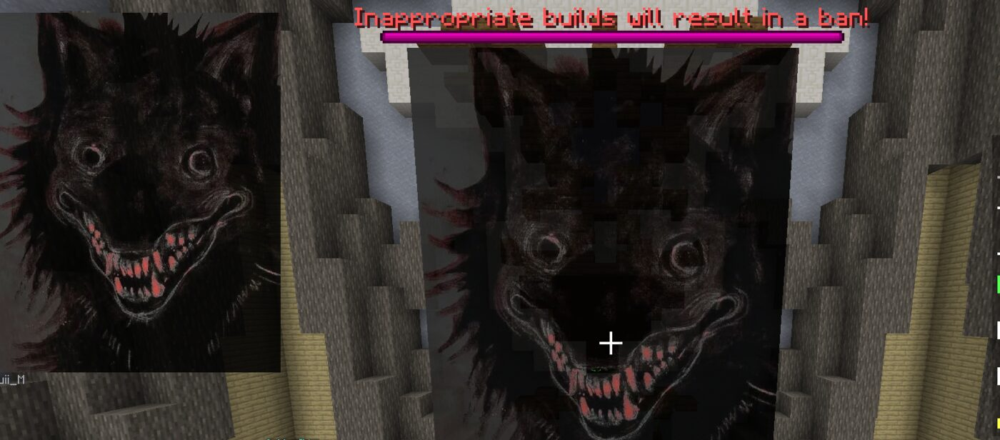

Search in-game
Press M, type a theme, and pick an image from the grid. There's no browser and no login.
Fabric mod · Minecraft 26.3 · client-side
PinSpo puts your inspiration where you're building. Search for images without alt-tabbing, pin one to your screen or stick it on a wall, and plant cameras so you can watch every side of your build at once.
by Koidu

Before PinSpo, checking two sides of a build meant a second account. Now it's one keypress.
Press M, type a theme, and pick an image from the grid. There's no browser and no login.
Your reference stays in a corner while you build. You can change its size, opacity and position, and it's still there after a restart.
Hover over any pixel of your reference to get its hex code and the closest blocks from your resource pack.
Look at a wall and press B. The image goes onto the blocks at true scale, so you can trace it, size it to whole blocks, fade it, rotate it, or push it forward and back.

Press K to plant a camera where you stand. You can have up to four live windows and zoom each one. Drag and resize them however you like.
Add PinSpo friends and send them a reference. One click puts it on their screen too.
.jar from the latest release.%appdata%\.minecraft\mods, and put the jar there. If you have an old PinSpo jar, delete it.| M | Open PinSpo (search, images, saved, build, friends, settings) |
| B | Put the pinned image on the wall you're looking at, or move it there |
| Shift + B | Wall photo panel: opacity, size, nudge, rotate, forward/back, sharing |
| K | Plant a camera where you stand |
| Shift + K | Arrange cameras: drag, resize, scroll to zoom, × to delete |
You can change every key in Options → Controls → PinSpo.
PinSpo only runs on your own game. It doesn't place blocks, move you, or show anything a server hides. The only thing it sends is a normal /msg, and only when you send a friend a reference.
Pinterest's public website, for search and images. Mojang's name lookup, to check friend names. Image links you paste yourself. That's all: no account, no analytics, no PinSpo server.
No. PinSpo is an unofficial fan project and isn't affiliated with Pinterest, Mojang or Microsoft.
Yes. Each visible camera is one extra, smaller world render, and the cost is shared between your cameras. To get it back, hide or delete cameras from the Build tab.